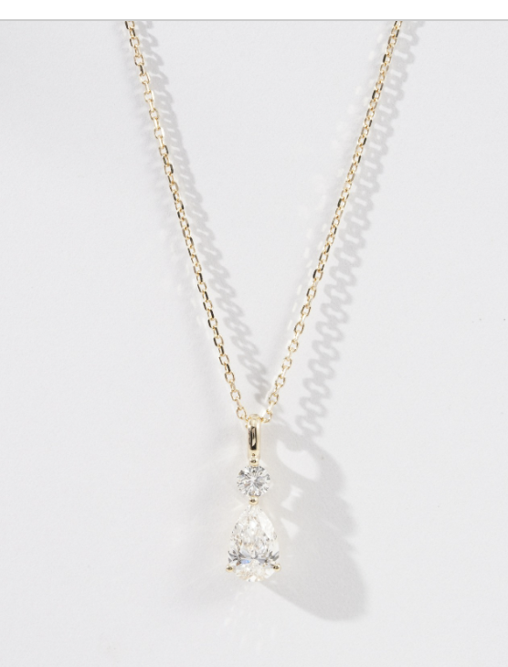

Jewelry Research Hub
A working notebook for sourcing diamonds, studying suppliers and manufacturers, and comparing what a deal actually includes.

Two-stone necklace project ↗Research topics
Diamond sourcing
Loose-stone inventories, grading reports, and how to compare individual stones.
Browse inventories →Suppliers & manufacturers
Search vendor names, reps, archived quotes, market leads, and feedback.
Open supplier directory →Deals & value
Compare listings and quotes by currency, construction, and the cost of a complete piece.
Read price audits →Necklace sourcing
The original two-stone project, from design preferences to quote requests and quality checks.
Open project dashboard →Wholesale diamond prices
Checked 2026 benchmarks by shape, carat and grade, with export and retail context.
View price chart →Marquise tennis necklace
Adjustable-chain design, matched quote specifications, and historical purchase prices.
Open buying brief →China district quote shortlist
Quote contacts in Panyu and Wuzhou, bilingual requests, and a setting budget comparison.
Get comparable quotes →Research journal
All entriesOpen the journal for dated research notes, decisions, and open questions.
How to add an entry
Add a dated note to research/journal.md with what you learned, the evidence, and the next open question. The journal includes a copyable template.
Source library
Catalog archive- China jewelry district researchWorkbook and notes →
- November 2026 research dossiers4 originals →
- Messi Jewelry design catalogPreview PDF · 99 MB →
- Lab-grown diamond inventoriesBrowse 4 workbooks →
- StarsGem listing and currency comparisonPreview table →
- Necklace request-for-quote trackerPreview workbook →